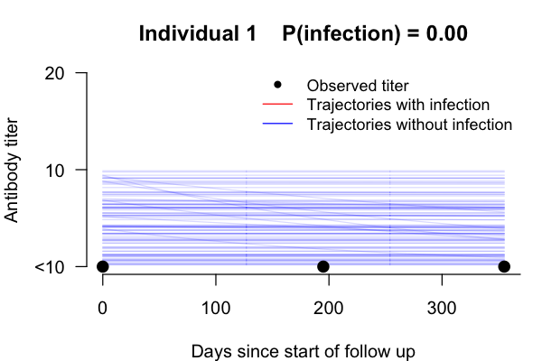
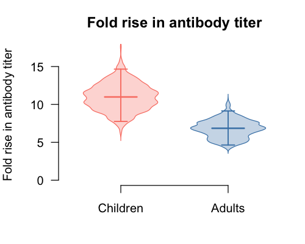
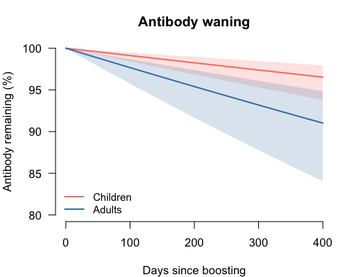
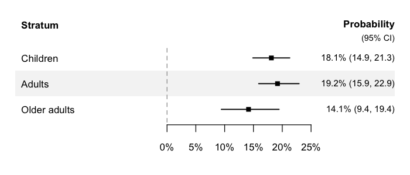

seroreconstruct is a Bayesian modeling framework to infer influenza virus infection status, antibody dynamics, and individual infection risks from serological data, by accounting for measurement error. This could identify influenza infections by relaxing 4-fold rise rule, and quantifies the contributions of age and pre-epidemic hemagglutination-inhibiting (HAI) titers to infection risk.
Features
- Bayesian MCMC inference of infection probability, antibody boosting/waning, and measurement error
- Multi-season support — fit season-specific infection risk and HAI protection parameters
-
Subgroup comparisons via
group_by— fit independent MCMCs for age groups, vaccination status, or other strata -
Shared parameters via
shared— run a joint model that shares measurement error and/or boosting/waning across groups while estimating group-specific infection risk -
S3 classes with
print()andsummary()methods for clean output - Publication-ready plots — antibody trajectories, boosting/waning distributions, infection probability forest plots, MCMC diagnostics
- Summary tables — parameter estimates with credible intervals, per-individual infection probabilities
-
Subject ID tracking — pass
subject_idstosero_reconstruct()for ID-based individual lookup in plots - Simulation — generate synthetic datasets for validation and power analysis
Quick start
library(seroreconstruct)
# Load example data
data("inputdata")
data("flu_activity")
# Fit the model (use more iterations for real analyses, e.g. 200000)
fit <- sero_reconstruct(inputdata, flu_activity,
n_iteration = 2000, burnin = 1000, thinning = 1)
# View results
summary(fit)Visualization
Antibody trajectory
plot_trajectory(fit, id = 1)
Red lines show posterior trajectories with infection; blue lines show trajectories without infection. Black dots are observed HAI titers.
Boosting distribution
plot_boosting(fit)
Violin plots of the posterior fold-rise in antibody titer after infection, with median crossbar and 95% credible interval.
Waning curves
plot_waning(fit)
Posterior median and 95% credible band for antibody remaining over time since infection.
Infection probability
plot_infection_prob(fit,
labels = c("Children", "Adults", "Older adults"))
Forest plot of posterior infection probabilities. Supports combining multiple fits with section headers for multi-group comparisons.
Tables
# Parameter estimates with credible intervals
table_parameters(fit)
# Per-individual infection probabilities
table_infections(fit)Subgroup analysis
Fit separate models for each age group:
fit_by_age <- sero_reconstruct(inputdata, flu_activity,
n_iteration = 20000, burnin = 10000,
thinning = 5, group_by = ~age_group)
# View combined results
summary(fit_by_age)
# Access individual group fits
summary(fit_by_age[["1"]])Joint model with shared parameters
When comparing groups (e.g., vaccinated vs unvaccinated), some parameters are biologically shared (measurement error, antibody dynamics) while infection risk differs between groups. Use shared to run a single joint MCMC that shares the specified parameters:
# Share measurement error and boosting/waning across vaccine groups
fit_joint <- sero_reconstruct(inputdata, flu_activity,
n_iteration = 20000, burnin = 10000,
thinning = 5,
group_by = ~vaccine,
shared = c("error", "boosting_waning"))
print(fit_joint)Available shared parameter types:
| Value | Parameters shared | Rationale |
|---|---|---|
"error" |
Random + two-fold measurement error | Lab measurement property, same for all groups |
"boosting_waning" |
Antibody boosting and waning rates | Biological response, may be shared across groups |
Infection probability and HAI protection are always group-specific.
Multi-season analysis
Add a season column (0-indexed integer) to your input data:
# Stack data from multiple seasons
inputdata$season <- 0L # single season example
# For multi-season: combine data frames with season = 0, 1, 2, ...
# The model estimates season-specific infection risk and HAI protection
fit_multi <- sero_reconstruct(multi_season_data, flu_activity,
n_iteration = 20000, burnin = 10000,
thinning = 5)Simulation
Generate synthetic data for validation:
data("para1") # example parameter vector (single season)
data("para2") # baseline HAI titer distribution
simulated <- simulate_data(inputdata, flu_activity, para1, para2)Citation
To cite package seroreconstruct in publications use:
Tsang TK, Perera RAPM, Fang VJ, Wong JY, Shiu EY, So HC, Ip DKM, Malik Peiris JS, Leung GM, Cowling BJ, Cauchemez S. (2022). Reconstructing antibody dynamics to estimate the risk of influenza virus infection. Nat Commun. 2022 Mar 23;13(1):1557.